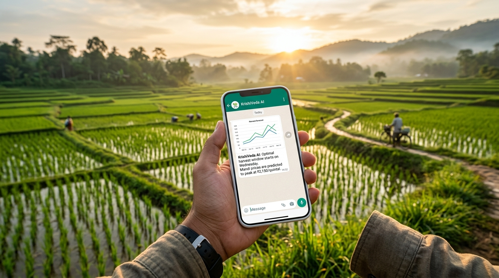

Precision agriculture with zero hardware costs. We analyze satellite data, local micro-climates, and mandi trends to send simple, direct watering and selling instructions to your WhatsApp.

Hero Banner Placeholder (hero-banner.png)
Hyper-local satellite vegetation mapping (NDVI) updated weekly to track your farm's health without expensive sensors.
Predictive 14-day Mandi market price peak forecasting to help you optimize harvest-sale windows and maximize profits.
No app downloads needed. Receive personalized alerts in your native language directly on your WhatsApp.
Forever Free Plan
Premium Plan
or ₹999/year (Save 15%)
We use open-source Sentinel-2 satellite imagery to measure vegetation indices (like NDVI) and estimate soil moisture depletion. Our AI processes this complex data into simple alerts, so you don't need any physical sensors on your farm.
Alerts are currently translated into clear, friendly vernacular Indian English and major regional languages like Hindi, Telugu, and Tamil. You can choose your preferred language during registration.
Absolutely. Your farm details and WhatsApp number are kept strictly confidential. We only use your data to provide personalized agronomy advice and do not sell information to third-party advertisers.